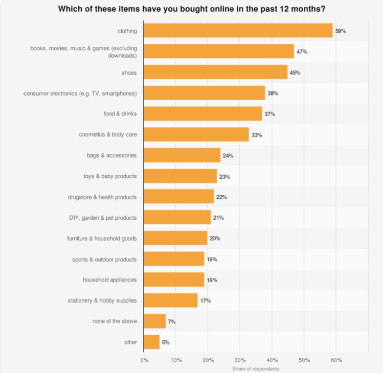

MY PROFILE
My Background
I’m khavya Mahesh, Student number - s3687324, email: s3687324@student.rmit.edu.au, I’m an International student from India, studying at RMIT University, currently pursuing Bachelor of Business Information System. I’ve been in Melbourne for about 3 years now, and have found this place to be completely diverse from the place where I come from as in India, I used to lead a life with an unique culture that is followed which is very traditional where people follow different religions, speak different languages and so on. At first, when I came here, It was kind of frustrating as I found myself lagging behind in so many things especially having trouble with understanding the fast accent of English speakers. But now, as days passed, I feel like I speak good English than some of them originated here. Australia has taught me so much in-terms of being Independent, fearless, a fun-filled person, and dedicated in whatever I do.
My Education:
Hobbies:
Interest in IT
My long term goal is to become an Entrepreneur by starting my own business line. At first I thought I’ll do some business only related course and it just struck me back then how I always wanted to know how all these application in any mobile device work or how exactly a computer operates and I thought to myself if I’m going to become an Entrepreneur, I should not only train myself to be good in the business side but also the technology point of view, and other major things that gave me an idea of opting for a business course combined with IT touch in it.
I chose RMIT to pursue my studies as I came to know that it was one of the tier 1 University and specialises in business and IT. Also, RMIT offered my course at low price when compared to Monash and Melbourne University which is other top Universities.
During my studies, I expect to be trained completely for the workplace and of course a good communication skills, a good team player, and looking forward to improve my leadership qualities.
Ideal Job
My current goal is to become a Business Analyst in-order to gain a lot of experience to carry out my long-term goal which is to become an Entrepreneur.Business-Analyst

I believe Business Analysts are responsible to analyse the problems of the firm and find solutions that are relevant by engaging with both programming side and business side of an organisation which is more like a middle-men. This position is appealing to me considering the fact that it requires me to possess a problem-solving mindset, and that others in the organisation will rely on our decision to make any changes in an organisation with regard to profit making and flourishing.
Major skills that are considered important to become a Business Analyst is to have a Competent Verbal Communication, Time-management skills, Excellent Listening skills, Documenting and writing reports etc for which I feel like I already possess such skills and qualities. The ability to solve a problem and critical thinking are some of the major qualities that are expected from a good analyst. A minimum of 5 years of experience in business analysis field will be essential to become a senior Business Analyst and also the ability to influence stakeholders and work closely with them to determine acceptable solutions are expected for which I’m planning to go internships in-order to gain experience.
My plan to gain the experience and qualifications in-order to become a Business Analyst is that - To gain work experience by doing internships and projects that are concerned with gaining the skills first. Secondly, Apply for a junior Analyst position or as an Assistant part time or full time. But before all this to undertake I’ll make sure I get the relevant knowledge by undertaking some appropriate course that would get me a valid certificate.
Personal profile
Myers-Briggs Test
Click thisMyers-Briggsto view my result.
Learning Style Test

Creativity Test

The Myers-Briggs test results helped me realise which personality I possess and what type of a person I really am and also my strengths and weaknesses. The learning style test which I took shows that I’m a Visual learner and it is so true that I always visualise any subject or a learning material in-order to remember them. It also have suggested on what to do to learn better such as drawing pictures to help explain new concepts and then understand the pictures, colour coding things, using flashcards to learn new words, writing down key-words which will help me to be a better student. The creativity test shows that I’m a very creative person which motivates me to do things more creatively and in my way.
As Myers-Briggs said that I love to help people which I think what I will do while working with a Team and help my teammates with what knowledge I have and make sure we achieve success together. I will strive to be more creative and suggests new ideas and try to advocate people by understanding what their mind-set is.
I think I will be looking for teammates who has got other qualities than what I’ve got so that I personally will have an opportunity to know more about other qualities and that might as well help the team to progress.
PROJECT IDEA
Overview
The project idea is to create an application for mobile devices that deals with Augmented Reality which will enhance the online shopping experience for users by just scanning the entire body of the user and capturing their measurements to show a demo of outfit in real-time. This application's name will be"ShopAugmenta"which is pretty straightforward meaning to try out the shopping experience using Augmented reality. This App will not only make shopping interesting and feasible to users but also brings in enormous amount of benefits to the Manufacturers too. The App as a whole will be available for both the users to help purchase from online as well as manufacturers to buy in-order to load their stock information. The app focuses mainly on providing a real-time online clothing experience and also other products that are relevant.
Motivation
Shopping is always fun and ShopAugmenta Application allows the users to have lot more fun as it help bring in a great user-experience which in-turn eliminates the process of trying out manually in the store directly or help in removing the fear of buying a mismatch order that would further cause frustration, loss of money and trust to users. The figure below shows the tremendous increase in amount of online shoppers for clothing, is one of the reason that emergence of this application will be successful and would solve problems of online-shoppers by making the purchasing process more realistic and meaningful. Other benefits in precise includes: time-consuming, clear and confident mind for online buyers, not worrying about the fittings, colour choice etc, Avoid going out for purchase - especially during this covid-19 times, and benefits for manufacturers will include: Increase in Online sales, Recognition of evolvement due to technology adaptation etc.
Description
The Application will be downloaded from the website or Appstore and will have several online stores connected or collaborated with the Application. The features and the procedures of the Application are explained below:
Tools and Technologies
Tools
Hardware requirements for developing an Augmented Reality Application will include - Mobile devices that by default has a processor, GPS, Display, Camera, Microphone etc. But in Future of AR hardware, AR glasses could improve the user-experience.
Software Requirements will include the Toolkits involved in developing the Augmented Reality App itself, such as Vuforia Augmented Reality SDK, ARkit, Wikitude, ARCore, and Unity could also be used.
Technologies
Skills Required
Skill Requirements includes the following:
Outcome
If the project becomes successful, the outcomes will be focused on solving problems such as the mismatch and the hesitance towards the exposure of fraudulent with the orders in-terms of colour and size suitability and would have increased online sales percentage of the manufacturers. This success could also enable improved business process as there is an adaptation to technology and will encourage online users to buy online rather than being present in a physical store where the customers will no longer have to worry about feeling fed-up, to trial every costumes by waiting in a queue while they could just Trial within seconds using this ShopAugmenta. The wait time spent in the queue for paying bills will also be resolved.
Anticipated Drawbacks:
REFERENCE
Delgado, C 2020, '7 Essential Skills For AR Apps Developers', [online] Our Code World, Available at:
Estay, B, 2020, '16 Fascinating Online Shopping Statistics (2020)', [online] The BigCommerce Blog, Available at:
Onirix 2020, 'The Best Augmented Reality Hardware In 2019 - Onirix', [online] Available at: